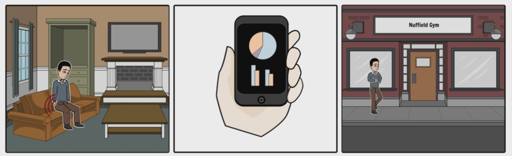
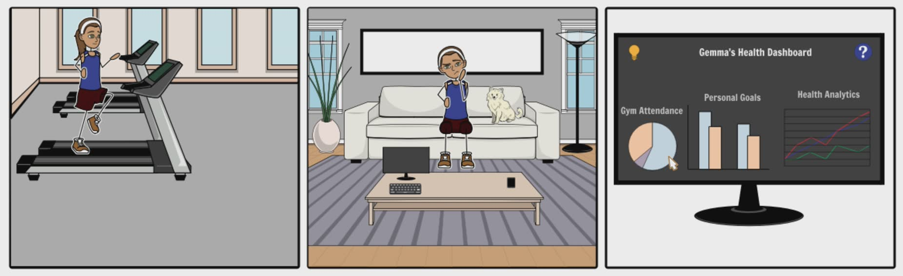

Team 31 Project Website
Introduction
Transpire is a platform developed by UCL second year Computer Science students that will collect data, process it and share it. Our team is working on an interactive dashboard for Nuffield Health clients that will display their health data and goals in a motivational and interactive manner. We will also be using machine learning to predict the user’s performances and so create meaningful notifications which will aid the user towards their set goals.
The initial problem that we are tackling is to be able to create a user friendly and informative data visualisation for Nuffield Health clients and to be able to share these data to third party platforms. Our goal is to create a health platform ecosystem to encourage sharing of data to convey a positive change for the clients and researchers. The platform for clients will consist of interactive and attractive visualisation of their own data to help them make better and more informative decisions for their lifestyle. Additionally, we would like the system to give recommendations to the users to improve their health and lifestyle. Additionally, we will be using Machine Learning using Microsoft’s Azure Machine Learning platform to perform analysis based on gym attendance to improve the attendance of their clients.
Key Features
- Social and local login implementation using industry authentication methodologies (OAuth)
- Interactive, beautiful and meaningful data visualisation
- Ecosystem of sharing health securely to third party organisations such as OpenMRS
- Customizable profile page as well as interactive showcase of maps of Nuffield Health Gyms
- Machine Learning to predict user actions to improve their health and lifestyle
Clients

The Team
Timeline
BriefingDuring this stage, the roles were decided and the first meeting with the clients and the supervisors took place.The general idea of the project was formed. The technologies that could fit the requirements were proposed to research and compare to decide what to use. Furthermore, we met up with the Digital Assistance team that we would be collaborating with and Diana. |
|||
ResearchDuring this stage, we have carefully identified the project specification and requirements with a particular focus on usability, alongside market research. Through research would be done by each member for different segments of the project to identify relevant new technologies, feasibility, complexity and risk. Furthermore, the architecture design as well as the appropriate software engineering principles were decided at this stage and confirmed by the client. |
|||
Testing and ExperimentationIn this stage the fundamental topics that were investigated in the “Research" timeline would be tested and experimented. There was the a creation of experiment logs that would include specific experiments for different features and components of the platform that is being developed. The experiment log was recording the experiment details, results and the success and failure of each. |
|||
PoC and PrototypingAt this stage we have began our proof of concept to demonstrate the feasibility and to verify the concept has practical potential. We would begin to create a working prototype based on our “research" and “experimentation" stages and this would be showed to the client for further improvements. |
|||
DevelopmentThe Development stage has taken place through second phase of the project. After completion of the prototyping stage we would start developing the core functionalities of the platform, such as the development of the dashboards alongside the interactive visualisation and machine learning implementations. |
|||
Future StepsFor the future of this project the aim is to gather more health data from Nuffield Health Clients through many different devices which can then be used to display more useful information. Additionally, more complex machine learning models can be built to predict further user needs. These will be taken by future teams, scaling up the project. |
Background and Context
We will be working in collaboration with Nuffield Health Hospital and Microsoft. Nuffield Health is a private health centre which provides variety of services such as Physiotherapy, Health Assessments, Emotional Well Being and even Gym facilities. We will be equipped and fully supported by Microsoft to deliver additional and innovative services to Nuffield Health's clients and professionals. Furthermore, we will be working closely with the Digital Assistance team and Diana a third year Computer Science student to deliver the final product.
The project will be split into two phases. Phase one of the project will be dedicated to creation of requirements and research, identifying strategies and the correct technologies, development of R&D experiments, architecture designs, development of experiments that will lead to our PoC design(s) and to build one or more prototypes. The second phase will largely be based on implementation and the core development of the functionalities of the platform as well as creating a solid documentation and the future plans of the project.
Requirement Gathering
For this specific project our team decided to use a range of variety of requirement gathering techniques. Initially and throughout the project we held multiple Interview and meetings with our client to gather and create suitable goals and requirements. This is due to our project consisting of heavy backend and heavy front-end segments. Therefore, we needed to arrange multiple interviews to agree on the backend architecture as well as the front-end design of the system.
Additionally, another method of gathering data was through prototyping. By opting for the agile approach, we continually created prototypes and features throughout our sprints of the system and held meetings with the client to gather feedback. Moreover, we held multiple brainstorming sessions to utilise our requirements during each sprint in the best way possible.
Requirements
Our team has decided to use the Agile software development practice. Agile development excels at reducing risk by creating software in short timeframes. Agile is usually done in iterations or sprints, where each iteration is usually 1-4 weeks long. The intent of these iterations is to develop software and/or features which will have functionality at the end of the short timeframe. Within each iteration, the development life cycle of requirements gathering, design, development, testing and documentation is prepared as if it is treated like a small sub-project. Therefore, we have presented to you an overall view of the general requirements as well as the requirements agreed on during each sprint.
Overall Requirements
Authorisation
- User Login using social media identity
- Identify of user links with third party identity
- Selection of subscribes to share data with
Messaging Queue
- Message queuing system implementation to integrate all components
- Subscriber able to pull only appropriate messages
- Unauthorised publisher unable to publish message
- Queues capacity large enough to handle large amount of messages
Data Storage
- User data stored in NoSQL database automatically as messages are published into the queue
- Data Visualisation from data stored
- Machine Learning on specific data
Dashboard
- Interactive dashboard visualising health data for Nuffield Health clients
- User able to specify personal goals
- Relevant interactive data displayed in a motivational way for customers
- Tailored bespoke notification targeted at clients in relation to their initial objectives and their current progression using machine learning
Sprint Requirements
Authorisation
- Implementation of Local Login and Local Sign up
- Implementation of Facebook Social Login using industry strategy practise (OAuth)
Front-end Design
- Full front-end dashboard implementation - updated home page and other pages of the dashboard
Back-end
- DocumentDB NoSQL database integration with the dashboard
- User profile implementation accordance to the backend architecture
- Restful API for the skype chat bot to access user data
Visualisation
- Implementation of Graph.js for visualisation
- Pull relevant data from DocumentDB to visualise meaningful graphs
Back-end
- Connect to GoogleFit and visualise graphs
- Backend implementation of GoogleFit refresh tokens
- Finalise backend implementation of messaging queues
Machine Learning
- Integration of Azure Machine Learning within dashboard
Personas
George Williams
Male, 27
"I know it's time to get in shape!"
Occupation: Accountant
Type: Customer
George has a full-time job and likes to watch tv when he gets home. Although he enjoys his lifestyle, he feels like change is necessary. He knows he needs to get in shape, but is afraid of failure. Despite his fears, he has bought Nuffield gym membership.
Goals
- Get in shape
- Get healthier
- Be more confident
Needs
- Visible progress
- Motivation
Pain Points
- Gets demotivated easily
Comfortable with Technology
Motivated
Organised
Easily Distracted
Sportsy
Gemma Smith
Female, 30
"It's time to be more efficient and goal oriented!"
Occupation: Senior Public Health Specialist
Type: Customer
Gemma is a health specialist and take her health and lifestyle very seriously. She actively goes to the Nuffield Health Gym and tries to stay in shape. However over the past few months, her workload has increased and she has seen very slow progress. She is unsure what areas she should focus on. To progress for the better she registred at NuffieldHealthActive to improve her progress.
Goals
- Be more efficient in training
- Manage Time
Needs
- Visible progress
- Precise and accurate data
Pain Points
- Job can get busy and unpredictable
Comfortable with Technology
Motivated
Organised
Easily Distracted
Sportsy
User Stories
Motivation for attendance
George has not been to the gym in a while. He is also considering giving up altogether and not extending his membership. The app detects that his behavioural patterns show he is very likely to stop attending and not consider returning. It notifies him and reminds him that he is not achieving his goals. Once he opens his app, his goal is displayed along with his progress and he is suggested a gym session to catch up. He reluctantly decides to pay his local gym another visit and slowly regains his motivation to continue. He ends up extending his membership.
Key Features
- ML algorithms trained on a large set of data
- Personal record that includes his gym attendance from swipe system
- Dashboard with visualisation of data
- Message queue used for integration of those parts
Key Business Impact
- Decreased number of customers who do not extend membership
- Enhanced user experience
- Data collected provides new information for improving ML algorithms
Dashboard effectiveness for clients
Gemma has been part of Nuffield Health hospital for a year and she takes great care of her health. She attends the gym regularly; however, recently she has been unable to focus on particular things that she should be working on to improve her health. She then decides to register and login to NuffieldHealthActive to set herself personalised goals to achieve for the current week and month. Furthermore, she is presented with attractive and interactive data of her performance and personal health data. By viewing this visualisation she's able to track her health and gain more insight about what she should focus on for the future.
Key Features
- ML algorithms trained on a large set of data for motivational purposes
- Dashboard with interactive visualisation of data (D3.js)
- Access to client data through Nuffield Health Hospital
Key Business Impact
- Higher customer satisfaction
- Increased use of Nuffield Health Services
Research & Technologies
In this section we will be going in depth about the specific research done for the choice of our technolgies and platforms.
Microsoft Platforms
Collaborating with Microsoft has enabled us to use many tools and platforms for our project. We will be using Visual Studio Team Services (VSTS) for our version control alongside other useful features such as measuring and reporting tools. Additionally we will be using Microsoft Azure which enables us to handle most of our back-end systems, such as the implementation of Authorisation, Messaging queue (Azure queue) and database systems. Microsoft Azure will enable us to collaborate closely and makes it easier to link different parts of the project together. Furthermore, we will be using the Azure Machine Learning platform to perform data analysis as part of our project.
Database Systems
For Most projects there will always be a requirement of storing and transfer of data. For our project this isn't an exception. We will be storing Fast Healthcare Interoperability Resources (FIHR) messages. It uses JSON or XML for data representation and its goal is to facilitate interoperation between healthcare systems. That way, it is easier to deliver healthcare information to healthcare providers and individuals.
For our project we will be using NoSQL database. It will enable us to have rapid analysis of large volumes of different data types. They provide scalability, availability and fault tolerance which seek to solve big data performance issues that a relational databases (SQL) isn't designed to address. They are also suitable for retrieving the data and visualisation later on in the project. As there are many options for database choices we researched the two most popular NoSQL options, MongoDB and Cassandra. We researched the advantages and disadvantages of the two. Due to our collaboration with Diana we decided to choose and use MongoDB as it seemed the best possible option.
However, after using MongoDB we realised some of it’s limitations for our project. Since machine learning is one of our elements within this project, we are unable to use MongoDB as the core database choice within Azure. Therefore, we migrated all our data within DocumentDB (another NoSQL database) hosted on Microsoft Azure to resolve the limitations and to also make all of our technology as coherent as possible as we are using many azure services. You can read more about the specifics in the Documents section below.
Messaging Queues and Event Hubs
Message queuing is a communication system used by different processes. In its simple form it is a first-in, first-out data structure of messages (of various formats). The data is being published by publishing processes (publishers) and retrieved by consuming processes (consumers).
For the requirements of this project, we will need a message queuing service that could handle a large amount of messages being sent. In addition to its basic functionality, we will need to make data accessible only to consumers previously specified by the publisher. Additionally, all the data sent over the service will be stored in the NoSQL database.
Two solutions were proposed. The first one was to use the Event Hubs service which provides most of the specified functionalities. The other one was the Azure Queue, which is a simple message queuing service with lower capabilities and fewer features. Although Event Hubs would be convenient to use, they are designed to hold a bigger amount of messages we could ever expect to be sent through this app. The additional features do not justify their costliness since they can be simulated by e.g. using multiple messaging queues.
A possible alternative to the Azure Queue implementation would be an open source tool rabbitMQ. While its capabilities are similar to the capabilities of Azure Queue. However, we have decided to use Azure Queues as they are easy to manage within the Azure portal. You can read more about the specifics in the Documents section below.
Authentication
Authentication is a process that ensures and confirms a user’s identity. Since access control is normally based on the identity of the user who requests access to a resource or a service, authentication is essential to effective security. OAuth is an open protocol to allow secure authorization in a simple and standard method from web, mobile and desktop applications. It is used as a way for Internet users to log in to third party websites through an access token mechanism, using their accounts at Google, Facebook, Microsoft, Twitter, etc.—but without exposing their password.
In this project we initially intended to use OAuth in conjunction with Azure Active Directory - Microsoft’s multi-tenant cloud based directory and identity management service. It is a powerful identity and access management service (IDaaS) for on-premises and cloud-based apps and provides administrators with the ability to manage end user identities and access privileges
By the beginning of second term, we learnt from Microsoft that we didn’t have the necessary Azure subscription to access the desired Active Directory service. We conducted research into the field of authentication and open source OAuth alternatives. Most of our existing application was already written in Node.js. We came across the Passport.js library - an authentication middleware for Node. A diverse set of strategies support authentication using a username and password, enabling login through Facebook or Google and others. It also permits Fitbit integration. We appreciated passport's modularity and flexibility and ended using this OAuth alternative as a replacement for Active Directory. You can read more about the specifics inthe Documents section below.
Data Visualisation
An integral part of our project will be based on creation of visualisation for Nuffield Health members to benefit from. Visualisation enables the members to see analytics presented visually which makes grasping complex and large data easier and more meaningful. With interactive data visualisation you are able drill down in more specific details that require to find out how they are processed. Furthermore, an attractive data visualisation can help motivate users. It can also help users identify areas that need attention and improvement.
To do this we have decided to look at two frameworks D3.js and charts.js. Both of these are JavaScript libraries for manipulating documents based on data. Both libraries provide sufficient functionalities for the purpose of our project, however after some investigation we came to the conclusion of using chats.js due to its simple but flexible javascript charting capabilities. Chart.js provides mixed chart types which provides a clear visual distinction between datasets. Additionally, it is animated as well as being interactive which increases the effectiveness of the visualisation.
Machine Learning
Machine learning was born from pattern matching and based on the theory that computers can learn without being programmed to perform specific tasks. The theory is all about if a machine is able to learn from data that is provided by it using smart algorithms. For this project we will be using the Azure Machine Learning platform and train it using data about gym attendance of Nuffield Health. By doing so we hope to gain useful information where than we can provide to both the clients and corporate users valuable and beneficial information. By building precise models, an organisation such as Nuffield Health Hospital has a better chance of identifying profitable opportunities or avoiding unknown risks. You can read more about the specifics in the Documents section below.
Testing & Automation
We've investigated testing tools that are adapted to the technologies we use in our project. A very suitable tool is the Azure Diagnostics functionality. It enables us to monitor requests and connections by gathering data about the activity that is generated. This would let us monitor the performance of the service from a customer perspective, and is also a major source of data for the Corporate version of our product.
Azure Diagnostics is functionality that needs to be configured on the different cloud services and virtual machines we make use of. We are interested in this tool because it enables us to test the robustness of the connections we make use of between queues and databases. This is done by collecting data and statistics on requests and connections related, web pages and services. Azure Diagnostics is particularly interesting because it is able to reduce the testing scope: it enables isolation of a service that is part of the product.
We also see testing as something that relates the user’s experience and how it reacts to the application's behaviour. We believe that using the expertise in Behavioural Science from the Oxford PhD student would allow us to test if the application fulfils it’s psychological impact of motivation, progression and motivation. This could for example be done by showing users different ways of displaying health data and analysing their perception of the dashboard.
We identify opportunities for automation, notably within testing. By using the targeted functionality of Diagnostics testing, we can automate test cases that are executed repeatedly and that are business critical. For example, making sure that the number of client connections to the system is coherent with the attendance data. This would allow us to garantee continuous data integrity. We also see space for automation in the process of performing back-ups of client data. This would collect all the copies of the data in a server automatically. Deletion of older back-up files that have exceeded an arbitrary time limit can also be automated
Experiments
Message Queuing
Description
Setting up Azure Queues within a single storage account using python and populating them with mock data.
Results
Successfully setup multiple queues and populated with data.
Date
Nov 30
Done by
Jas
Status
Success
Description
Dequeuing mock messages from the storage queues using python.
Results
Successfully dequeued messages from multiple queues populated with mock data.
Date
Nov 30
Done by
Jas
Status
Success
Description
Implementing a simple REStful API allowing third party publishers to publish their data onto a queue (without having an access key). For the time being there is no authentication so it cannot be deployed yet.
Results
Successfully Implemented
Date
Dec 1 - Dec 6
Done by
Jas
Status
Success
Description
There is a need for authentication and it will be done by publisher/consumer acquiring a token from AD B2C and push it into the API along with a message. This token will then get verified by the API which will automatically publish/retrieve messages only to/from the queues authorised.
Results
N/A
Date
N/A
Done by
N/A
Status
Pending for Stage 2
Description
API needs to be published and accessible to use by other components of the app.
Results
N/A
Date
N/A
Done by
N/A
Status
Pending for Stage 2
Active Directory
Description
Manipulate and set up Active directories, add application registrations, configurations, add owners, access policies, and Identity providers
Results
Success
Date
Nov 20
Done by
Marc
Status
Success
Description
Use Microsoft’s multi-tenant cloud based directory and identity management service to host identities and enable access through identity layer on top of the OAuth 2.0 protocol required for webapps
Results
N/A
Date
Nov 29 -
Done by
Marc
Status
In Progress
Description
Use Facebook’s secure, fast and convenient way for people to log into the app or website. This is done by identifying appID and secret and adding Facebook as Identity Provider within Azure ADB2C
Results
N/A
Date
Nov 29 -
Done by
Marc
Status
In Progress
Description
Azure AD B2C supports the OAuth 2.0 authorization protocol, which makes use of both access tokens and refresh tokens. Make use of this feature to enable publishers and consumers to communicate exchange messages destined to be queued.
Results
N/A
Date
N/A
Done by
N/A
Status
Pending for Stage 2
Description
Based on user preference, return the list of queues correcponding to the token
Results
N/A
Date
N/A
Done by
N/A
Status
Pending
Databases
Description
A NoSQL database which will store all of the data sent from publishers
Results
Successfully installed VM on windows 2012 azure
Date
Nov 16
Done by
Mo
Status
Success
Description
Test to see if able to create sample data within the database manually
Results
Sucessfully created a databse, with a table with smple data manaually
Date
Nov 23
Done by
Mo
Status
Success
Description
Request to access the corresponding messages from the messaging queue and to store on MongoDB through a script
Results
Developed a Python script using the python driver Pymongo to connect the database with the messaging. The database is able to to pull new messages inside the database within specific tables.
Date
Dec 07
Done by
Mo & Jas
Status
Success
Description
Automation and scheduling of the script written to pull messages from the Azure queue
Results
Made the python script into an executable form where we were able to use scheduling through windows to pull messages from the Azure messaging queue every 5 minutes automatically whenever the database is connected
Date
Dec 07
Done by
Mo & Jas
Status
Success
Description
Access tokens through identification for authenticated publishers,therefore each message can be identified to the corresponding publisher
Results
N/A
Date
N/A
Done by
N/A
Status
Pending for Stage 2
Description
Machine learning has to be trained on the specific data from MongoDB which later will be used for visualisation and improvement of the system
Results
N/A
Date
N/A
Done by
N/A
Status
Pending for Stage 2
Human Computer Interaction Principles
In this section we will exploring some of the important HCI principles that we used within our project as well as showcasing screenshots of our final prototype and some initial sketches of the dashboard.
{kind=link}
{kind=link}
{kind=link}
Visibility & Affordance
Visibility and affordance play an important role in our approach of integrating HCI elements within our project. We designed the interfaces so that just the right things are made visible. With this in mind we wanted every click performed by the user to have direct effect on what they see on the interface. Our landing page is a very simple, yet characteristic interface and initial point of contact. Each button redirects to a page hosting a distinct login method. Similarly, our dashboard is organised in such a way that every click either redirects the user to another panel or generates a modal or a drop down list. Fairly simple and direct buttons are employed, and if they cannot be easily represented by a symbol, they are shown with their actual names in text.
Feedback
Our Dashboard provides human computer interaction feedback to the user in multiple ways. We have implemented features that satisfy user’s need for signals that confirm interaction and communication. For example, when the user logs in using Facebook, we pull recognisable data such as the name of the user and the profile picture and display it on Dashboard and profile of user. This provides the user with the confirmation that the authentication has effectively gone through. To amplify this communication between the user and the service, we have incorporated a greeting notification, using the name of the user. Furthermore, the actions performed on the dashboard translate into different graphs, providing the visual feedback needed by the user.
Consistency
Our approach of incorporating consistency in our human computer interaction efforts is reflected in our usage of a wrapper for the content alongside a uniform color scheme throughout the different dashboard pages. There is a consistent format for format, menus, notifications and other fundamental functionalities. We attempt to display as many graphs as possible using the same graph.js library in order to have a consistent responsiveness and homogenous interactions with the data. In addition to this, we placed consistency in our usage of the application logo, as it appears in conjunction with the API’s we make use of for example.
Constraints
We have made use of human computer interaction constraints in our application. For example, we intentionally wanted to keep the landing page (or login page) with a very simplistic design and little functionality other than the login buttons. This conveys the exclusive character of the service, but more importantly prevents the user from performing any undesired action before accessing a heavily documented page: the dashboard.
We have also made use of HCI constraints in the profile page of the user, limiting the user’s ability to personalise the service only to a certain extent. This prevents a chaotic and heterogeneous organisation of profiles and identifiers. We wanted the user to be able to change things, but only to a certain extent - hence the usage of a certain number of limited fields.
Final Dashboard Design
{kind=link}
{kind=link}
{kind=link}
{kind=link}
{kind=link}
Design
System Architecture
To view a full system architecture please refer to the Documents section below.
Design Patterns
Design patterns within Computer Science are very important since they allow us to easily maintain and scale software. By using design patterns we are trying to build software that makes sense, is reusable and bug free. The main design patterns we’ve made use of are: Model View Controller, Singleton, Factory, Bridge and Facade.
Model View Controller
Our user interface is implemented using the Model View Controller (MVC) pattern, allowing us to incorporate consistency across the various interfaces and efficiently reuse the existing layouts. This pattern is particularly relevant to our product for a number of reasons. We rely on a collection of views as we provide multiple representations of information in the form of a variety of charts and diagrams on our dashboard. Our dashboard and other interfaces are highly interactive, requiring the capabilities of a controller, accepting input and distributing relevant and converted data to the model and view components.
Singleton
The passport.js components, such as identification credentials, and the auth.js file are restricted in their instantiation to a single object. This is a manifestation of our usage of the Singleton design pattern, and enables us to coordinate actions across the system more efficiently.
Factory
The Factory design pattern is used across our product. For example, our graphs are generated using a common Graph.js framework and a similar dataset structure - rendering a homogeneous data visualisation dashboard. The function we use to create individual messages within the message queues employ a factory pattern as it is used to generate distinct messages from a common base.
Facade
The Facade design pattern appears in our routes.js file. This file gathers all the paths and calls to the database in conjunction with our data visualisations into one single component. It effectively makes our code more readable, making it easier to hand over for further development projects. It abstracts from the complexities of the larger numbers of interdependent classes and API’s we make use of, through a simple interface.
Developer Tools
We have used numerous tools to conduct this project. In addition to using git as our main version control tool and gitHub as our version control repository, we used Microsoft Visual Studio Team Services to facilitate communication through sprints or during integration features and functionalities. We also used it to create backlogs and assign tasks across the team, improving how we operate our incremental agile software development.
Google Drive was used as our main centralised file storage facility, providing access to all relevant documentation and reports produced and required by all team members. Google Drive was also used to enable our client to easily share relevant datasets with us.
A large part of our UI is provided by Bootstrap but includes crucial integrations of major APIs such as Google Maps and Facebook Graph (for identity name and profile picture). It also involves javascript libraries such as Graph.js for interactive graphs.
Our team did not require any specific IDE to conduct development on the project. Therefore, we used our favourite text editors, notably, Sublime Text and Atom.
Implementation of Key Functionalities
Authentication
One of our key functionalities were to implement social login implementation using industry authentication methodologies (OAuth). After having initially worked on an implementation of Azures Acive Directory identity management platform, we ended up using an open source tool called passport.js. Passport.js This is an authentication middleware for Node.js, which is what our application is written in. We used multiple passport.js strategies to support authentication using username and password through Facebook or Google.
We were required to follow the standard OAuth protocol from the start of the project, allowing users to authorize API access applications. This is supported by Passport. Implementing secure login required registering our Nuffield application with the various APIs (Google, Facebook), to obtain tokens and identifiers. Using Passport essentially allowed us to issue access tokens to third-party clients by
OAuth essentially allows access tokens to be issued to third-party clients by an authorization server, with the approval of the resource owner. The third party then uses the access token to access the protected resources hosted by the resource server.
Visualisation
Similarly to the authentication implementation, this functionality has been subject to change during the course of the project. We had initially set out to use D3.js - a highly sophisticated JavaScript library for producing dynamic, interactive data visualizations in web browsers.
However, after several meetings with the client we concluded using another JavaScript library which seemed more appropriate for our use. Therefore, for our visualisation we used Graph.js which provided us customizable graphs within different sectors, great colour schemes as well as interactivity of our data. Furthermore, the library is very easy to use and well documented which makes it a lot user friendly when the project is passed on to continue for further development.
Finally, we have implemented a "goal set" strategy, where the users are able to set personal goals to their desired tasks. For example, a user is able to choose a goal of how many times a day they would like to go to the gym in a particular week or perhaps how many steps they would like to take in a day. These goals are analysed based on previous data, and by using machine learning each user receives a notification advising them on their set goal.
Machine Learning
During the development process of this project our team decided to using Microsoft's Azure Machine Learning to further advance the purpose of the project. We developed multiple Poisson Regression models called the "6 week models", based on Nuffield Health gym swipe data of their clients. By modularising and cleaning the data we trained the model to predict when it is likely a member is going to quit or cancel their membership.
Further simpler models have been created to indicate a "lazy" and an "active" user based on their personal health data. As each user is able to set goals for themselves within the dashboards, in regards to if they have or have not set a goal, they will receive a notification advising them on their goal set.
Messaging Queue
To be completed
Health Data Sharing
A key functionality and aim of this project has been to allow Transpire users to share their data with their permission securely. Our aim has been to create a health ecosystem to provide different users to feel empowered when they are sharing their data. This is done by creating engaging dashboards representing how their data can be shown to them in a meaningful way as well as partnering with trust worthy organisations where share of data is done to help research within specific fields.
As well as integrating specific Nuffield Health member data, our team has also integrated a GoogleFit data collection. This is done so that if the user has been using other third party mediums to record and monitor their health, they are also given the opportunity to view the relevant data on their Transpire dashboard. GoogleFit was implemented using the GoogleFit API and the Nuffield Health member data has been collected within our secure DocumentDB database on Azure and queried to be displayed on the dashboards.
Testing
During the different stages of the project, it was vital to include testing to preserve functionality with changes being added, ensure integration points are working and the UI meets usability requirements.
Unit and Integration Testing
These two were essential to ensure the system functioning as planned and to prevent side effects in other areas of the code when the system was amended or modified. The tests cases were designed to be repeated after changes took place. If they revealed a bug, the debugging took place. If it revealed further tests should be added, the test suite was amended.
Furthermore, if a bug was found that was not covered by formal test cases, a test case was thought of to futureproof software from that bug. It was then added to the formally defined testing suite and performed upon every future change of software.
User Acceptance Testing
The User Acceptance tests were performed throughout the development stage of the project where we were testing if the feature meets the need of users and clients. After a feature was added, it was presented to the client and the test users (friends and family) that gave us feedback. This approach was chosen to ensure
One of the largest challenges of this stage was to ensure the feedback given could help us improve the system. Although the general questions did provide us with a general idea of how the users find the UI, it was harder to get specific details of what to improve. As the usability is a bit more subjective than the predicates used in Unit and Integration testing, it was vital to ask test users specific questions to ensure we had a straightforward answer of what to improve.
Responsive Design and Compatibility Testing
The system was intended to run on a variety of different browsers and on screens of different sizes. This is why it was crucial to ensure the UI design was responsive and that the front-end was compatible with as many browsers as possible on different operating systems, including those on mobile devices.
The responsive design tests were carried out, firstly by resizing the browser screen and then after those were successful, the browser tools for responsive design were used. If those showed no errors, the system was also run on different devices with different screen sizes to ensure the UI displays properly.
Upon completion of those tests, different browsers were used on different operating systems and devices to identify any unwanted changes in the UI. Luckily, our team had a few different computer and mobile devices, covering the majority of Operating Systems so no devices needed to be borrowed from UCL.
If at any point the test failed, the frontend was debugged and all of the responsive design and compatibility tests were re-tested from the beginning. This ensured that fixing a bug did not result in new unhandled bugs.
Automated Testing
Although a lot of testing was performed empirically, certain test cases were automated during the later stages of the project. This helped to ensure lower time cost of testing and formalise the test cases.
Unit and Integration testing were partially automated using Unit.js framework. The tool was chosen due to its straightforwardness, ease of usability and short learning curve. The automated tests were run in terminal using Mocha, a Javascript testing tool. This is an example test result portion after the tests were run:
{kind=link}
Evaluation
Client Feedback
"The team has demonstrated a very high level of professionalism throughout the project. They have shown initiative during the requirements elicitation phase, being very active in building upon the high-level requirements given to them. The team was able to present a clear and well-formed vision of what the project should deliver.
Design and delivery were well planned and managed, incorporating feedback and ensuring regular meetings take place with the main stakeholders. The project was particularly challenging as the team was required to understand and use a wide range of technologies.
They team has clearly shown commitment to the project success, and throughout the project they were particularly good at managing expectations and delivering everything they have committed to.
The project is a clear success, and stakeholders in Nuffield are currently considering how the project can inform further digital initiatives."
"To Be Inserted Here"
Documents & Management
Bi-Weekly Reports And Meetings
Below are presented all of our individual bi-weekly reports highlighting our progress during this project as well as a high level overall view of all of our meetings.
User Manual
Please view the document below for an indepth user manual guide of the system developed
User Manual
Download
Research Reports
Please view our in depth research reports and system architecture which includes all the appropriate IEEE refrences at the bottom